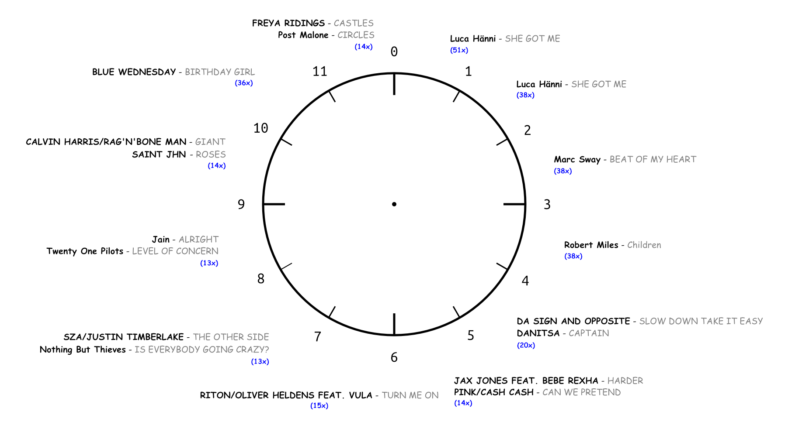
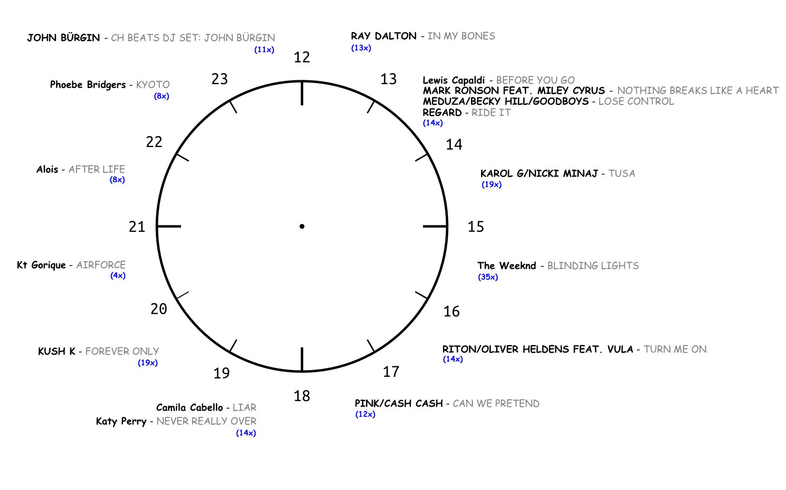

SRF3: Meistgespielte Lieder Pro Tagesstunde
- Station: SRF3
- Zeitspanne: 1. Januar 2020 - 17. September 2020
Bei dieser Auswertung ging es darum, für jede Tagesstunde den meistgespielten Song zu finden.
Beobachtungen
2 Lieder gewinnen eine Tagesstunde gleich 2 Mal:
- Luca Hänni - SHE GOT ME zwischen 00:00 - 00:59 und 01:00 - 01:59.
- PINK/CASH CASH - CAN WE PRETEND zwischen 05:00 - 05:59 und 17:00 - 17:59.
Die Stunde 20:00 - 20:59 scheint am abwechslungsreichsten zu sein: Der Song Kt Gorique - AIRFORCE ist Sieger in dieser Stunde mit gerade mal 4 Plays während dieser Tagesstunde.
Das Lied BLUE WEDNESDAY - BIRTHDAY GIRL welches die Tagesstunde 10:00 - 10:59 gewinnt, wird praktisch jeden Sonntag um die gleiche Zeit (ca. 10:58) angespielt, quasi Tradition.
The Weeknd - BLINDING LIGHTS gewinnt Tagesstunde 15:00 - 15:59, dies aufgrund der wöchentlichen Hitparade am Sonntag. Dieser Post erklärt das Phänomen genauer.
Resultat
| Tagesstunde | Plays | Künstler - Song |
|---|---|---|
| 00:00 - 00:59 | 51 | Luca Hänni - SHE GOT ME |
| 01:00 - 01:59 | 38 | Luca Hänni - SHE GOT ME |
| 02:00 - 02:59 | 38 | Marc Sway - BEAT OF MY HEART |
| 03:00 - 03:59 | 38 | Robert Miles - Children |
| 04:00 - 04:59 | 20 | DA SIGN AND OPPOSITE - SLOW DOWN TAKE IT EASY |
| 20 | DANITSA - CAPTAIN | |
| 05:00 - 05:59 | 14 | JAX JONES FEAT. BEBE REXHA - HARDER |
| 14 | PINK/CASH CASH - CAN WE PRETEND | |
| 06:00 - 06:59 | 15 | RITON/OLIVER HELDENS FEAT. VULA - TURN ME ON |
| 07:00 - 07:59 | 13 | Nothing But Thieves - IS EVERYBODY GOING CRAZY? |
| 13 | SZA/JUSTIN TIMBERLAKE - THE OTHER SIDE | |
| 08:00 - 08:59 | 13 | Jain - ALRIGHT |
| 13 | Twenty One Pilots - LEVEL OF CONCERN | |
| 09:00 - 09:59 | 14 | CALVIN HARRIS/RAG’N’BONE MAN - GIANT |
| 14 | SAINT JHN - ROSES | |
| 10:00 - 10:59 | 36 | BLUE WEDNESDAY - BIRTHDAY GIRL |
| 11:00 - 11:59 | 14 | FREYA RIDINGS - CASTLES |
| 14 | Post Malone - CIRCLES | |
| 12:00 - 12:59 | 13 | RAY DALTON - IN MY BONES |
| 13:00 - 13:59 | 14 | Lewis Capaldi - BEFORE YOU GO |
| 14 | MARK RONSON FEAT. MILEY CYRUS - NOTHING BREAKS LIKE A HEART | |
| 14 | MEDUZA/BECKY HILL/GOODBOYS - LOSE CONTROL | |
| 14 | REGARD - RIDE IT | |
| 14:00 - 14:59 | 19 | KAROL G/NICKI MINAJ - TUSA |
| 15:00 - 15:59 | 35 | The Weeknd - BLINDING LIGHTS |
| 16:00 - 16:59 | 14 | RITON/OLIVER HELDENS FEAT. VULA - TURN ME ON |
| 17:00 - 17:59 | 12 | PINK/CASH CASH - CAN WE PRETEND |
| 18:00 - 18:59 | 14 | Camila Cabello - LIAR |
| 18:00 - 18:59 | 14 | Katy Perry - NEVER REALLY OVER |
| 19:00 - 19:59 | 19 | KUSH K - FOREVER ONLY |
| 20:00 - 20:59 | 4 | Kt Gorique - AIRFORCE |
| 21:00 - 21:59 | 8 | Alois - AFTER LIFE |
| 22:00 - 22:59 | 8 | Phoebe Bridgers - KYOTO |
| 23:00 - 23:59 | 11 | JOHN BÜRGIN - CH BEATS DJ SET: JOHN BÜRGIN |
Diagramm
Gewinner der ersten Tageshälfte (00:00 - 11:59)

Gewinner der zweiten Tageshälfte (12:00 - 23:59)

SQL Query für die Datenaufbereitung:
SELECT hour
, plays
, a.name || ' - ' || s.title AS artist_song
FROM (
SELECT hour
, song_id
, RANK() OVER (PARTITION BY hour ORDER BY plays DESC)
, plays
FROM (
SELECT song_id
, EXTRACT(hour FROM broadcasted_at_in_tz) AS hour
, count(*) AS plays
FROM (
SELECT song_id
, broadcasted_at AT TIME ZONE 'UTC' AT TIME ZONE 'Europe/Zurich' broadcasted_at_in_tz
FROM cleaned_broadcasts
) t1
GROUP BY song_id, hour
) t2
) t3
INNER JOIN songs s ON s.id = t3.song_id
INNER JOIN artists a ON a.id = s.artist_id
WHERE rank = 1
ORDER BY hour, a.name